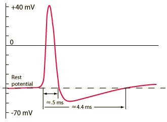
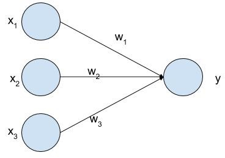
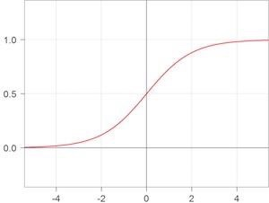
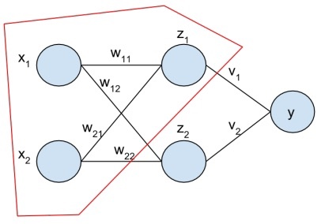

Chapter 1: What is a neural network?
A neural network is called such because at some point in history, computer scientists were trying to model the brain in computer code.
The eventual goal is to create an “artificial general intelligence”, which to me means a program that can learn anything you or I can learn. We are not there yet, so no need to get scared about the machines taking over humanity. Currently neural networks are very good at performing singular tasks, like classifying images and speech.
Unlike the brain, these artificial neural networks have a very strict predefined structure.
The brain is made up of neurons that talk to each other via electrical and chemical signals (hence the term, neural network). We do not differentiate between these 2 types of signals in artificial neural networks, so from now on we will just say “a” signal is being passed from one neuron to another.
Signals are passed from one neuron to another via what is called an “action potential”. It is a spike in electricity along the cell membrane of a neuron. The interesting thing about action potentials is that either they happen, or they don’t. There is no “in between”. This is called the “all or nothing” principle. Below is a plot of the action potential vs. time, with real, physical units.
 
These connections between neurons have strengths. You may have heard the phrase, “neurons that fire together, wire together”, which is attributed to the Canadian neuropsychologist Donald Hebb.
Neurons with strong connections will be turned “on” by each other. So if one neuron sends a signal (action potential) to another neuron, and their connection is strong, then the next neuron will also have an action potential, would could then be passed on to other neurons, etc.
If the connection between 2 neurons is weak, then one neuron sending a signal to another neuron might cause a small increase in electrical potential at the 2nd neuron, but not enough to cause another action potential.
Thus we can think of a neuron being “on” or “off”. (i.e. it has an action potential, or it doesn’t)
What does this remind you of?
If you said “digital computers”, then you would be right!
Specifically, neurons are the perfect model for a yes / no, true / false, 0 / 1 type of problem. We call this “binary classification” and the machine learning analogy would be the “logistic regression” algorithm.
 
The above image is a pictorial representation of the logistic regression model. It takes as inputs x1, x2, and x3, which you can imagine as the outputs of other neurons or some other input signal (i.e. the visual receptors in your eyes or the mechanical receptors in your fingertips), and outputs another signal which is a combination of these inputs, weighted by the strength of those input neurons to this output neuron.
Because we’re going to have to eventually deal with actual numbers and formulas, let’s look at how we can calculate y from x.
y = sigmoid(w1*x1 + w2*x2 + w3*x3)
Note that in this book, we will ignore the bias term, since it can easily be included in the given formula by adding an extra dimension x0 which is always equal to 1.
So each input neuron gets multiplied by its corresponding weight (synaptic strength) and added to all the others. We then apply a “sigmoid” function on top of that to get the output y. The sigmoid is defined as:
sigmoid(x) = 1 / (1 + exp(-x))
If you were to plot the sigmoid, you would get this:
 
You can see that the output of a sigmoid is always between 0 and 1. It has 2 asymptotes, so that the output is exactly 1 when the input is + infinity, and the output is exactly 0 when the input is - infinity.
The output is 0.5 when the input is 0.
You can interpret the output as a probability. In particular, we interpret it as the probability:
P(Y=1 | X)
Which can be read as “the probability that Y is equal to 1 given X”. We usually just use this and “y” by itself interchangeably. They are both “the output” of the neuron.
To get a neural network, we simply combine neurons together. The way we do this with artificial neural networks is very specific. We connect them in a feedforward fashion.
 
I have highlighted in red one logistic unit. Its inputs are (x1, x2) and its output is z1. See if you can find the other 2 logistic units in this picture.
We call the layer of z’s the “hidden layer”. Neural networks have one or more hidden layers. A neural network with more hidden layers would be called “deeper”.
“Deep learning” is somewhat of a buzzword. I have googled around about this topic, and it seems that the general consensus is that any neural network with one or more hidden layers is considered “deep”.
Exercise
Using the logistic unit as a building block, how would you calculate the output of a neural network Y? If you can’t get it now, don’t worry, we’ll cover it in Chapter 3.